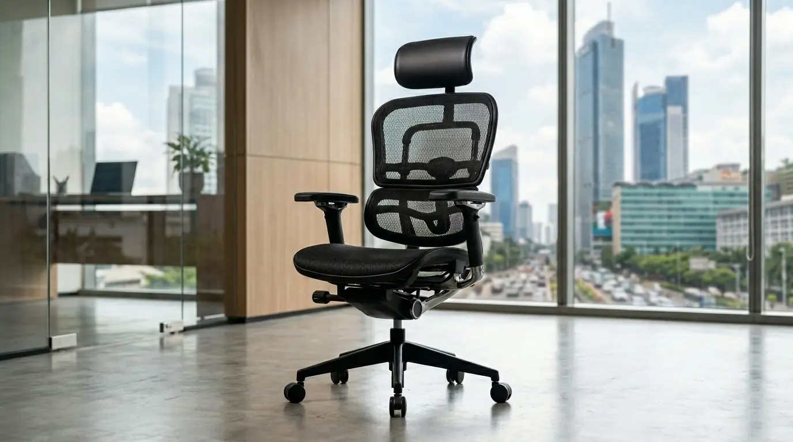

Apakah Kursi Ergonomis Terbaik Efektif Mengatasi Sakit Pinggang Pekerja?
Kursi ergonomis terbaik terbukti efektif menopang tulang belakang bagian bawah sehingga mengurangi tekanan panggul dan meredakan sakit pinggang secara signifikan.
Penggunaan kursi kerja yang tidak sesuai standar kesehatan menjadi penyebab utama gangguan muskuloskeletal pada pekerja kantoran. Berdasarkan data Badan Kesehatan Kerja Internasional periode 2025–2026, lebih dari 68 persen karyawan korporat perkotaan mengeluhkan nyeri punggung bawah akibat duduk terlalu lama tanpa penopang lumbar yang adekuat.
Selain itu, laporan Riset Kesehatan Okupasi Indonesia 2026 mencatat bahwa investasi pada kursi kantor ergonomis berkualitas berhasil menekan tingkat absensi akibat sakit pinggang hingga 42 persen pada tahun pertama implementasi.
Mengatasi keluhan fisik di lingkungan kerja membutuhkan kombinasi antara fasilitas kerja yang memadai dan perhatian pada kenyamanan staf. Selain menyediakan sarana fisik yang mendukung postur tubuh, perusahaan modern kini secara aktif mengombinasikan pengadaan perabot ergonomis dengan pemberian paket apresiasi bernilai tinggi.
Jika Anda sedang merencanakan pembaruan fasilitas kerja atau program retensi karyawan, konsultasikan pengadaan perabot dan paket Souvenir Kantor Jakarta bersama kami untuk mendapatkan penawaran harga grosir terbaik.
- Kursi ergonomis yang baik dapat mengurangi tekanan pada tulang belakang hingga 30%.
- Keluhan sakit pinggang adalah penyebab utama absensi kerja di Indonesia (Data Kemnaker 2025).
- Kombinasi kursi ergonomis + meja sit-stand memberi perlindungan optimal.
Apa Saja 10 Kursi Kantor Ergonomis Terbaik Bebas Sakit Pinggang di 2026?
Daftar 10 kursi kantor ergonomis terbaik mencakup model dengan teknologi penopang dinamis, penyesuaian multi-arah, dan bahan jaring sirkulasi udara tinggi.

Salah satu model kursi ergonomis favorit eksekutif: perpaduan desain modern, material mesh, dan dudukan busa tebal.
Berikut adalah daftar pilihan terbaik yang dirancang khusus untuk kenyamanan duduk berjam-jam:
- ErgoPro Master Spine — Dilengkapi teknologi Dynamic Lumbar Tracking yang mengikuti pergerakan pinggang secara otomatis sepanjang hari.
- SteelComfort Executive — Menggunakan busa cetak kepadatan tinggi dengan sandaran kepala 3D untuk menyangga leher serta punggung bawah.
- MeshBreeze Ultra — Mengandalkan material jaring elastis berstandar industri yang menjaga sirkulasi udara tetap sejuk meski duduk lebih dari delapan jam.
- PostureFlex Task Chair — Memiliki sandaran tangan 4D dan penopang tulang belakang yang dapat diatur kedalamannya sesuai proporsi tubuh.
- AeroSit Pro — Didesain dengan mekanisme synchro-tilt yang memungkinkan penyandaran tubuh tanpa mengangkat posisi paha dari dudukan.
- Orthocare Ergonomic — Fokus pada kesehatan tulang lumbar dengan mekanisme penguncian empat posisi kemiringan sandaran.
- Zenith Executive Mesh — Memadukan estetika ruang direksi modern dengan struktur rangka aluminium yang kokoh dan tahan lama.
- LumbarGuard Matrix — Menyediakan bantalan pinggang ganda yang dirancang khusus untuk meredakan kompresi saraf skiatika.
- FlexiWork Hybrid — Kursi kerja fleksibel yang ideal untuk konsep kantor terbuka maupun ruang kerja personal di rumah.
- Apex Ergonomix — Varian kelas premium dengan pengaturan otomatis berdasarkan berat badan pengguna untuk penopangan optimal.
- Untuk eksekutif: pilih SteelComfort Executive atau Zenith Executive Mesh.
- Untuk tim operasional: MeshBreeze Ultra dan PostureFlex Task Chair adalah favorit.
- Jika ada karyawan dengan riwayat skiatika, LumbarGuard Matrix sangat direkomendasikan.
Bagaimana Cara Memilih Kursi Kerja Ergonomis yang Sesuai Kebutuhan Korporat?
Cara memilih kursi kerja ergonomis adalah dengan menguji rentang pengaturan ketinggian, elastisitas penopang pinggang, kekerasan busa, serta kualitas roda.
Pemilihan perabot kantor untuk skala perusahaan membutuhkan evaluasi menyeluruh agar sesuai dengan standar keselamatan dan kesehatan kerja (K3). Langkah pertama adalah memastikan ketersediaan fitur penopang lumbar yang dapat disesuaikan naik-turun maupun maju-mundur. Langkah kedua, perhatikan bahan pelapis; material mesh premium umumnya lebih tahan lama dan tidak menyimpan panas dibandingkan kulit sintetis murah. Langkah ketiga, pastikan roda dan basis kursi memiliki daya tahan beban minimal 120 kilogram untuk keamanan jangka panjang.
Memilih perabot kantor berkualitas tinggi sejalan dengan upaya perusahaan dalam menjaga standar estetika dan profesionalisme. Untuk melengkapi pengalaman kerja eksekutif yang elegan, berikan apresiasi berkesan menggunakan paket Souvenir Kantor Jakarta dari tim kami.
- ✅ Lumbar support adjustable (2D atau 4D)
- ✅ Ketinggian dudukan (gas lift) dengan range 40–55 cm
- ✅ Sandaran tangan 3D/4D
- ✅ Material mesh berkualitas tinggi (untuk iklim tropis)
- ✅ Kapasitas beban ≥ 120 kg
- ✅ Garansi mekanisme hidrolik minimal 3 tahun
Apa Saja Kesalahan Umum Saat Membeli Kursi Kantor untuk Ruang Kerja?
Kesalahan umum saat membeli kursi kantor meliputi memprioritaskan desain visual daripada fungsi ergonomis dan mengabaikan garansi mekanisme hidrolik.
Banyak pembeli fasilitas kantor tergiur oleh tampilan luar yang mewah tanpa mengecek fleksibilitas penyesuaian komponen. Menggunakan kursi yang terlalu keras atau tidak memiliki penyangga paha yang pas dapat menghambat sirkulasi darah di kaki. Selain itu, membeli produk tanpa garansi resmi sering kali menyulitkan perawatan saat terjadi kerusakan pada sistem hidrolik atau roda.
- ❌ Membeli hanya berdasarkan harga murah tanpa uji coba.
- ❌ Mengabaikan material pelapis (kulit sintetis murah cepat rusak).
- ❌ Tidak memeriksa stabilitas basis kursi (bintang 5 wajib).
- ❌ Lupa menanyakan garansi dan ketersediaan suku cadang.
Tips Mengatur Posisi Duduk Ergonomis Agar Bebas Nyeri Punggung
Tips mengatur posisi duduk ergonomis adalah memosisikan siku membentuk sudut sembilan puluh derajat, paha sejajar lantai, dan mata sejajar ujung atas layar.
Pengaturan posisi duduk yang tepat harus diterapkan secara disiplin oleh setiap karyawan. Pastikan telapak kaki menapak rata di atas lantai atau gunakan pijakan kaki jika meja terlalu tinggi. Jaga jarak pandang mata ke layar monitor antara lima puluh hingga tujuh puluh sentimeter untuk menghindari ketegangan otot leher. Sesuaikan sandaran tangan agar bahu tetap rileks tanpa terangkat saat mengetik.
- 1. Atur tinggi kursi sehingga paha horizontal dan kaki rata di lantai.
- 2. Sesuaikan lumbar support tepat di lekuk pinggang.
- 3. Posisikan sandaran tangan setinggi meja agar siku 90°.
- 4. Layar monitor setinggi mata, jarak satu lengan.
- 5. Gunakan sandaran kepala jika kursi memiliki fitur tersebut.
Pertanyaan Populer Seputar Kursi Kantor Ergonomis (FAQ)
Kesimpulan Praktis
Menginvestasikan anggaran perusahaan pada 10 kursi kantor ergonomis terbaik merupakan langkah strategis untuk meningkatkan kenyamanan, kesehatan, dan produktivitas karyawan. Dengan kombinasi penopang lumbar yang tepat, mekanisme penyesuaian yang presisi, serta material berkualitas, risiko sakit pinggang dapat ditekan secara signifikan.
Lengkapi keunggulan fasilitas kantor Anda dengan memesan paket Perlengkapan Kantor dari kami sekarang juga untuk mendapatkan promo harga khusus korporat!